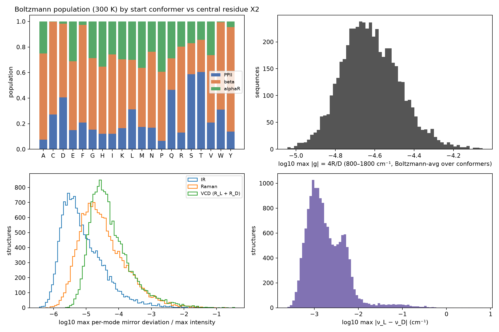
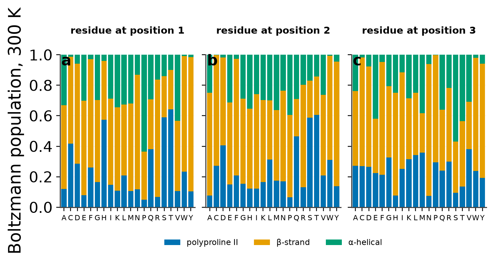
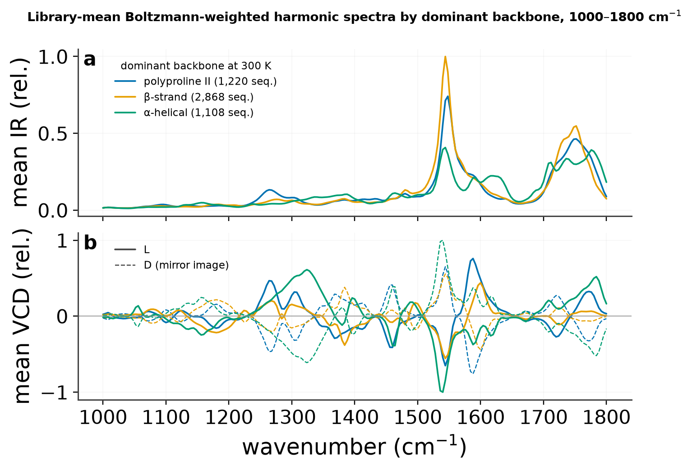
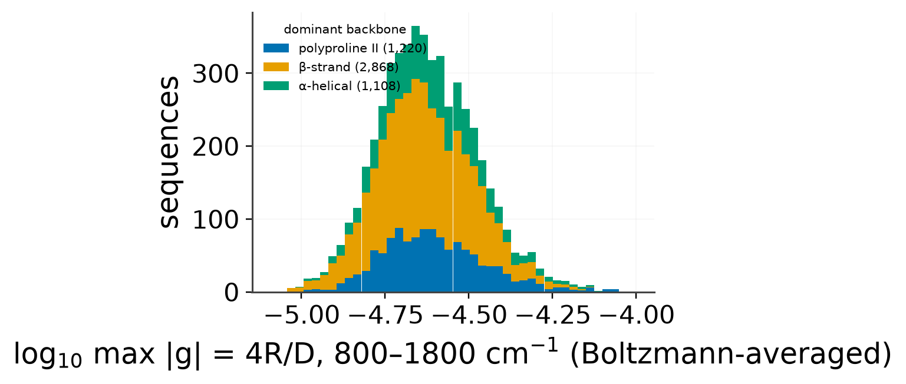
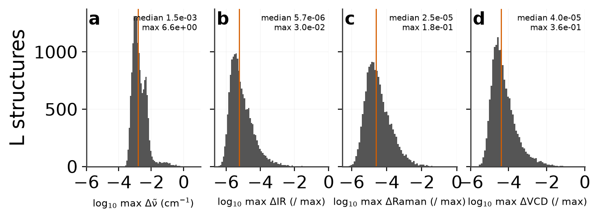
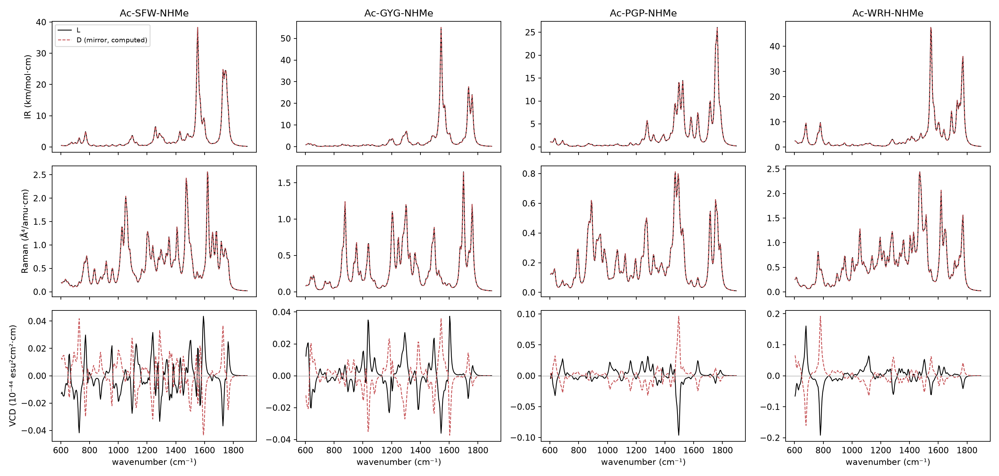
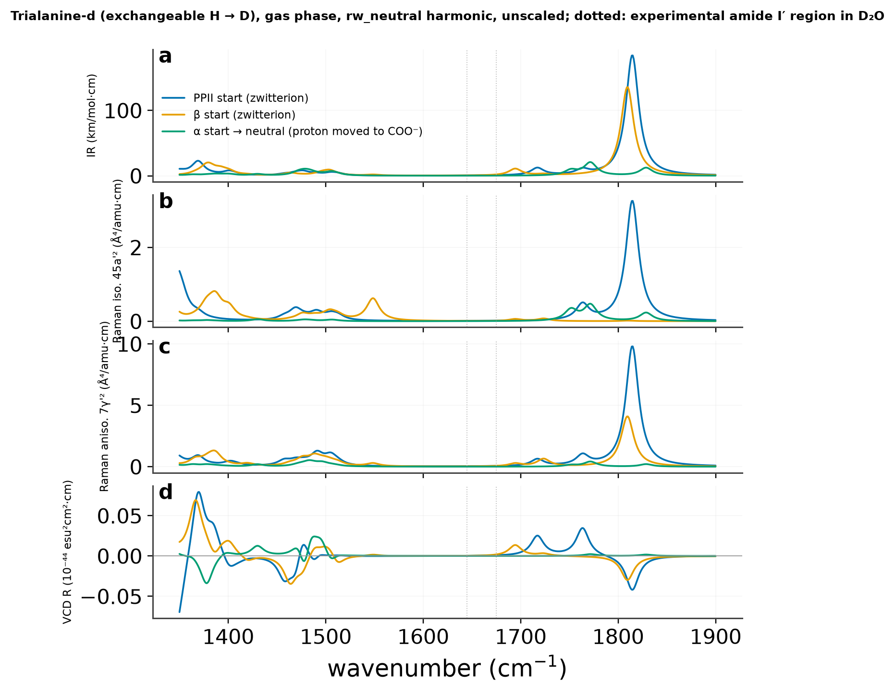

Model against
the digitized traces.
65 published profiles compared with harmonic IR, Raman and VCD from EFieldPhysNet (rw_neutral) peptides minimised inside CHARMM36 solvent spheres with the measured charge states and counter-ions. Overlays, CSVs on the reference grids, raw stick spectra and provenance are all here; the atlas viewer can overlay each prediction with one click.
Agreement by observable
| Observable | n | median r (unscaled) | median best uniform scale | median r (scaled) | median VCD sign agreement |
|---|---|---|---|---|---|
| IR | 33 | -0.34 | 0.945 | 0.68 | |
| Raman iso. | 10 | -0.32 | 0.915 | 0.81 | |
| Raman aniso. | 7 | -0.49 | 0.912 | 0.80 | |
| VCD | 15 | -0.03 | 0.930 | 0.35 | 47 % |
r is the Pearson correlation between the digitised trace and the broadened prediction (Lorentzian HWHM 10 cm⁻¹) on the trace's own grid, both independently normalised. The uniform scale is scanned from 0.88 to 1.02 and the maximum reported; the unscaled files carry no scaling. Equal conformer weights (two minima per system). VCD uses charges-only atomic axial tensors, so sign agreement is the honest number there.
Generated 2026-10-12 from checkpoint sha256 fd4f096cb7b144ff… at code commit 9abb65735c7c.
Uncapped tripeptides
| Overlay | Reference | r unscaled | scale | r scaled | VCD sign | per conformer r | Files |
|---|---|---|---|---|---|---|---|
 |
AAA · anionic · D2O · ir eker2002_fig3_AAA_anionic_D2O_ir · fig 3 AAA_an / D / IR |
-0.28 | 0.892 | 0.46 | PPII 0.44, beta 0.32 | unscaled · scaled · reference | |
 |
AAA · anionic · D2O · vcd eker2002_fig3_AAA_anionic_D2O_vcd · fig 3 AAA_an / D / VCD |
-0.02 | 0.930 | 0.57 | 46 % | PPII 0.42, beta 0.41 | unscaled · scaled · reference |
 |
AAA · cationic · D2O · ir eker2002_fig3_AAA_cationic_D2O_ir · fig 3 AAA_cat / D / IR |
-0.00 | 0.960 | 0.59 | PPII 0.52, beta 0.59 | unscaled · scaled · reference | |
 |
AAA · acid · H2O · raman · iso eker2002_fig16_AAA_acid_H2O_raman_iso · fig 16 AAA_cat / H / Raman iso. |
-0.40 | 0.880 | 0.44 | PPII 0.20, beta 0.71 | unscaled · scaled · reference | |
 |
AAA · cationic · D2O · vcd eker2002_fig3_AAA_cationic_D2O_vcd · fig 3 AAA_cat / D / VCD |
-0.10 | 0.942 | 0.23 | 72 % | PPII -0.06, beta 0.33 | unscaled · scaled · reference |
 |
AAA · zwitterion · D2O · ir eker2002_fig1_AAA_zwitterion_D2O_ir · fig 1 AAA_zw / D / IR |
-0.60 | 0.902 | 0.67 | PPII 0.59, beta 0.66 | unscaled · scaled · reference | |
 |
AAA · zwitterion · D2O · ir eker2002_fig3_AAA_zwitterion_D2O_ir · fig 3 AAA_zw / D / IR |
-0.37 | 0.902 | 0.47 | PPII 0.45, beta 0.42 | unscaled · scaled · reference | |
 |
AAA · zwitterion · D2O · raman · aniso eker2002_fig1_AAA_zwitterion_D2O_raman_aniso · fig 1 AAA_zw / D / Raman aniso. |
-0.51 | 0.907 | 0.80 | PPII 0.67, beta 0.78 | unscaled · scaled · reference | |
 |
AAA · zwitterion · D2O · raman · iso eker2002_fig1_AAA_zwitterion_D2O_raman_iso · fig 1 AAA_zw / D / Raman iso. |
-0.24 | 0.910 | 0.71 | PPII -0.07, beta 0.90 | unscaled · scaled · reference | |
 |
AAA · zwitterion · D2O · vcd eker2002_fig3_AAA_zwitterion_D2O_vcd · fig 3 AAA_zw / D / VCD |
-0.04 | 0.945 | 0.23 | 46 % | PPII 0.06, beta 0.25 | unscaled · scaled · reference |
 |
A · DA · A · zwitterion · D2O · ir eker2002_fig1_A_DA_A_zwitterion_D2O_ir · fig 1 ADA_zw / D / IR |
-0.65 | 0.900 | 0.55 | PPII 0.57, beta 0.47 | unscaled · scaled · reference | |
 |
A · DA · A · zwitterion · D2O · raman · aniso eker2002_fig1_A_DA_A_zwitterion_D2O_raman_aniso · fig 1 ADA_zw / D / Raman aniso. |
-0.64 | 0.907 | 0.74 | PPII 0.70, beta 0.75 | unscaled · scaled · reference | |
 |
A · DA · A · zwitterion · D2O · raman · iso eker2002_fig1_A_DA_A_zwitterion_D2O_raman_iso · fig 1 ADA_zw / D / Raman iso. |
-0.34 | 0.937 | 0.87 | PPII 0.92, beta -0.11 | unscaled · scaled · reference | |
 |
KKK · acid · pD1 · D2O · ir eker2002_fig13_KKK_acid_pD1_D2O_ir · fig 13 KKK_pD1 / D / IR |
0.32 | 0.977 | 0.76 | PPII 0.80, beta 0.60 | unscaled · scaled · reference | |
 |
KKK · acidic · label · D2O · ir eker2002_fig14_KKK_acidic_label_D2O_ir · fig 14 KKK_pD1 / D / IR |
0.19 | 0.977 | 0.74 | PPII 0.83, beta 0.41 | unscaled · scaled · reference | |
 |
KKK · acid · pD1 · D2O · raman · aniso eker2002_fig13_KKK_acid_pD1_D2O_raman_aniso · fig 13 KKK_pD1 / D / Raman aniso. |
0.25 | 0.980 | 0.80 | PPII 0.83, beta 0.63 | unscaled · scaled · reference | |
 |
KKK · acid · pD1 · D2O · raman · iso eker2002_fig13_KKK_acid_pD1_D2O_raman_iso · fig 13 KKK_pD1 / D / Raman iso. |
0.36 | 0.980 | 0.86 | PPII 0.93, beta 0.73 | unscaled · scaled · reference | |
 |
KKK · acid · H2O · raman · iso eker2002_fig16_KKK_acid_H2O_raman_iso · fig 16 KKK_pD1 / H / Raman iso. |
-0.81 | 0.880 | 0.78 | PPII 0.74, beta 0.73 | unscaled · scaled · reference | |
 |
KKK · acidic · label · D2O · vcd eker2002_fig14_KKK_acidic_label_D2O_vcd · fig 14 KKK_pD1 / D / VCD |
0.09 | 0.880 | 0.10 | 51 % | PPII 0.11, beta 0.06 | unscaled · scaled · reference |
 |
KKK · neutral · pD7 · D2O · ir eker2002_fig13_KKK_neutral_pD7_D2O_ir · fig 13 KKK_pD7 / D / IR |
-0.35 | 0.910 | 0.68 | PPII -0.18, beta 0.83 | unscaled · scaled · reference | |
 |
KKK · neutral · label · D2O · ir eker2002_fig14_KKK_neutral_label_D2O_ir · fig 14 KKK_pD7 / D / IR |
-0.36 | 0.907 | 0.45 | PPII -0.04, beta 0.65 | unscaled · scaled · reference | |
 |
KKK · neutral · pD7 · D2O · raman · aniso eker2002_fig13_KKK_neutral_pD7_D2O_raman_aniso · fig 13 KKK_pD7 / D / Raman aniso. |
-0.37 | 0.912 | 0.49 | PPII 0.25, beta 0.41 | unscaled · scaled · reference | |
 |
KKK · neutral · pD7 · D2O · raman · iso eker2002_fig13_KKK_neutral_pD7_D2O_raman_iso · fig 13 KKK_pD7 / D / Raman iso. |
-0.30 | 0.967 | 0.89 | PPII -0.16, beta 0.94 | unscaled · scaled · reference | |
 |
KKK · neutral · label · D2O · vcd eker2002_fig14_KKK_neutral_label_D2O_vcd · fig 14 KKK_pD7 / D / VCD |
0.04 | 0.940 | 0.21 | 41 % | PPII 0.06, beta 0.25 | unscaled · scaled · reference |
 |
SSS · anionic · D2O · ir eker2002_fig10_SSS_anionic_D2O_ir · fig 10 SSS_an / D / IR |
-0.46 | 0.912 | 0.78 | PPII 0.74, beta 0.71 | unscaled · scaled · reference | |
 |
SSS · anionic · D2O · ir eker2002_fig11_SSS_anionic_D2O_ir · fig 11 SSS_an / D / IR |
-0.34 | 0.912 | 0.35 | PPII 0.33, beta 0.33 | unscaled · scaled · reference | |
 |
SSS · anionic · D2O · raman · aniso eker2002_fig10_SSS_anionic_D2O_raman_aniso · fig 10 SSS_an / D / Raman aniso. |
-0.49 | 0.917 | 0.90 | PPII 0.79, beta 0.79 | unscaled · scaled · reference | |
 |
SSS · anionic · D2O · raman · iso eker2002_fig10_SSS_anionic_D2O_raman_iso · fig 10 SSS_an / D / Raman iso. |
-0.38 | 0.920 | 0.83 | PPII 0.83, beta -0.42 | unscaled · scaled · reference | |
 |
SSS · anionic · D2O · vcd eker2002_fig10_SSS_anionic_D2O_vcd · fig 10 SSS_an / D / VCD |
0.09 | 0.925 | 0.43 | 38 % | PPII -0.13, beta 0.48 | unscaled · scaled · reference |
 |
SSS · anionic · D2O · vcd eker2002_fig11_SSS_anionic_D2O_vcd · fig 11 SSS_an / D / VCD |
-0.12 | 0.922 | 0.43 | 61 % | PPII 0.03, beta 0.51 | unscaled · scaled · reference |
 |
SSS · cationic · D2O · ir eker2002_fig11_SSS_cationic_D2O_ir · fig 11 SSS_cat / D / IR |
0.03 | 0.965 | 0.59 | PPII 0.51, beta 0.40 | unscaled · scaled · reference | |
 |
SSS · cationic · D2O · vcd eker2002_fig11_SSS_cationic_D2O_vcd · fig 11 SSS_cat / D / VCD |
-0.06 | 0.887 | 0.28 | 60 % | PPII 0.25, beta 0.16 | unscaled · scaled · reference |
 |
VVV · anionic · solvent · unspecified · ir eker2002_fig5_VVV_anionic_solvent_unspecified_ir · fig 5 VVV_an / D / IR |
-0.74 | 0.902 | 0.73 | PPII 0.69, beta 0.55 | unscaled · scaled · reference | |
 |
VVV · anionic · D2O · ir eker2002_fig6_VVV_anionic_D2O_ir · fig 6 VVV_an / D / IR |
-0.21 | 0.902 | 0.39 | PPII 0.38, beta 0.32 | unscaled · scaled · reference | |
 |
VVV · anionic · solvent · unspecified · raman · aniso eker2002_fig5_VVV_anionic_solvent_unspecified_raman_aniso · fig 5 VVV_an / D / Raman aniso. |
-0.64 | 0.905 | 0.92 | PPII 0.81, beta 0.77 | unscaled · scaled · reference | |
 |
VVV · anionic · solvent · unspecified · raman · iso eker2002_fig5_VVV_anionic_solvent_unspecified_raman_iso · fig 5 VVV_an / D / Raman iso. |
-0.37 | 0.907 | 0.87 | PPII 0.55, beta 0.83 | unscaled · scaled · reference | |
 |
VVV · anionic · D2O · vcd eker2002_fig6_VVV_anionic_D2O_vcd · fig 6 VVV_an / D / VCD |
-0.02 | 0.897 | 0.56 | 84 % | PPII 0.54, beta 0.31 | unscaled · scaled · reference |
 |
VVV · cationic · solvent · unspecified · ir eker2002_fig5_VVV_cationic_solvent_unspecified_ir · fig 5 VVV_cat / D / IR |
0.02 | 0.937 | 0.61 | PPII 0.62, beta 0.56 | unscaled · scaled · reference | |
 |
VVV · cationic · D2O · ir eker2002_fig6_VVV_cationic_D2O_ir · fig 6 VVV_cat / D / IR |
0.08 | 0.977 | 0.54 | PPII 0.48, beta 0.55 | unscaled · scaled · reference | |
 |
VVV · cationic · solvent · unspecified · raman · aniso eker2002_fig5_VVV_cationic_solvent_unspecified_raman_aniso · fig 5 VVV_cat / D / Raman aniso. |
-0.01 | 0.977 | 0.63 | PPII 0.68, beta 0.52 | unscaled · scaled · reference | |
 |
VVV · cationic · solvent · unspecified · raman · iso eker2002_fig5_VVV_cationic_solvent_unspecified_raman_iso · fig 5 VVV_cat / D / Raman iso. |
0.45 | 0.980 | 0.74 | PPII 0.81, beta 0.56 | unscaled · scaled · reference | |
 |
VVV · cationic · H2O · raman · iso eker2002_fig9_VVV_cationic_H2O_raman_iso · fig 9 VVV_cat / H / Raman iso. |
-0.15 | 0.880 | 0.80 | PPII 0.75, beta 0.65 | unscaled · scaled · reference | |
 |
VVV · cationic · D2O · vcd eker2002_fig6_VVV_cationic_D2O_vcd · fig 6 VVV_cat / D / VCD |
-0.03 | 0.880 | 0.18 | 37 % | PPII 0.18, beta 0.12 | unscaled · scaled · reference |
 |
VVV · zwitterion · D2O · ir eker2002_fig6_VVV_zwitterion_D2O_ir · fig 6 VVV_zw / D / IR |
-0.38 | 0.930 | 0.31 | PPII 0.37, beta 0.10 | unscaled · scaled · reference | |
 |
VVV · zwitterion · D2O · vcd eker2002_fig6_VVV_zwitterion_D2O_vcd · fig 6 VVV_zw / D / VCD |
0.19 | 1.012 | 0.22 | 26 % | PPII 0.21, beta 0.13 | unscaled · scaled · reference |
Capped Ac-Gly-NHMe and Ac-Ala-NHMe
| Overlay | Reference | r unscaled | scale | r scaled | VCD sign | per conformer r | Files |
|---|---|---|---|---|---|---|---|
 |
Ac-L-Ala-NHMe · ar · matrix · ir pohl2007_fig5d_ir_ar_matrix · fig 5 AcA_ar / H / IR |
-0.24 | 0.965 | 0.68 | C7 0.72, C5 0.55 | unscaled · scaled · reference | |
 |
Ac-L-Ala-NHMe · ar · matrix · ir pohl2007_fig6d_ir_ar_matrix · fig 6 AcA_ar / H / IR |
-0.43 | 0.950 | 0.81 | C7 0.90, C5 0.22 | unscaled · scaled · reference | |
 |
Ac-L-Ala-NHMe · ar · matrix · vcd pohl2007_fig7d_vcd_ar_matrix · fig 7 AcA_ar / H / VCD |
-0.37 | 0.932 | 0.47 | 69 % | C7 0.29, C5 0.47 | unscaled · scaled · reference |
 |
Ac-L-Ala-NHMe · dcm · ir pohl2007_fig5a_ir_dcm · fig 5 AcA_dcm / H / IR |
-0.50 | 0.955 | 0.88 | C7 0.88, C5 0.79 | unscaled · scaled · reference | |
 |
Ac-L-Ala-NHMe · dcm · ir pohl2007_fig6a_ir_dcm · fig 6 AcA_dcm / H / IR |
-0.42 | 0.970 | 0.64 | C7 0.77, C5 -0.19 | unscaled · scaled · reference | |
 |
Ac-L-Ala-NHMe · dcm · vcd pohl2007_fig7a_vcd_dcm · fig 7 AcA_dcm / H / VCD |
-0.16 | 0.882 | 0.44 | 25 % | C7 0.50, C5 -0.02 | unscaled · scaled · reference |
 |
Ac-L-Ala-NHMe · dmso · ir pohl2007_fig5b_ir_dmso · fig 5 AcA_dmso / H / IR |
-0.18 | 0.940 | 0.71 | C7 0.65, C5 0.33 | unscaled · scaled · reference | |
 |
Ac-L-Ala-NHMe · dmso · ir pohl2007_fig6b_ir_dmso · fig 6 AcA_dmso / H / IR |
-0.50 | 0.945 | 0.72 | C7 0.73, C5 0.67 | unscaled · scaled · reference | |
 |
Ac-L-Ala-NHMe · dmso · vcd pohl2007_fig7b_vcd_dmso · fig 7 AcA_dmso / H / VCD |
-0.03 | 0.967 | 0.35 | 47 % | C7 0.09, C5 0.26 | unscaled · scaled · reference |
 |
Ac-L-Ala-NHMe · kr · matrix · ir pohl2007_fig5c_ir_kr_matrix · fig 5 AcA_kr / H / IR |
-0.27 | 0.965 | 0.75 | C7 0.70, C5 0.65 | unscaled · scaled · reference | |
 |
Ac-L-Ala-NHMe · kr · matrix · ir pohl2007_fig6c_ir_kr_matrix · fig 6 AcA_kr / H / IR |
-0.41 | 0.952 | 0.77 | C7 0.82, C5 0.20 | unscaled · scaled · reference | |
 |
Ac-L-Ala-NHMe · kr · matrix · vcd pohl2007_fig7c_vcd_kr_matrix · fig 7 AcA_kr / H / VCD |
-0.20 | 0.930 | 0.43 | 63 % | C7 0.43, C5 0.20 | unscaled · scaled · reference |
 |
Ac-Gly-NHMe · ar · matrix · ir pohl2007_fig2d_ir_ar_matrix · fig 2 AcG_ar / H / IR |
-0.30 | 0.962 | 0.81 | C7 0.70, C5 0.62 | unscaled · scaled · reference | |
 |
Ac-Gly-NHMe · ar · matrix · ir pohl2007_fig3d_ir_ar_matrix · fig 3 AcG_ar / H / IR |
-0.23 | 0.952 | 0.61 | C7 0.44, C5 0.43 | unscaled · scaled · reference | |
 |
Ac-Gly-NHMe · dcm · ir pohl2007_fig2a_ir_dcm · fig 2 AcG_dcm / H / IR |
-0.57 | 0.952 | 0.90 | C7 0.72, C5 0.71 | unscaled · scaled · reference | |
 |
Ac-Gly-NHMe · dcm · ir pohl2007_fig3a_ir_dcm · fig 3 AcG_dcm / H / IR |
-0.34 | 0.945 | 0.69 | C7 0.38, C5 0.90 | unscaled · scaled · reference | |
 |
Ac-Gly-NHMe · dmso · ir pohl2007_fig2b_ir_dmso · fig 2 AcG_dmso / H / IR |
-0.26 | 0.940 | 0.82 | C7 0.87, C5 0.69 | unscaled · scaled · reference | |
 |
Ac-Gly-NHMe · dmso · ir pohl2007_fig3b_ir_dmso · fig 3 AcG_dmso / H / IR |
-0.62 | 0.945 | 0.84 | C7 0.79, C5 0.79 | unscaled · scaled · reference | |
 |
Ac-Gly-NHMe · kr · matrix · ir pohl2007_fig2c_ir_kr_matrix · fig 2 AcG_kr / H / IR |
-0.42 | 0.962 | 0.85 | C7 0.69, C5 0.72 | unscaled · scaled · reference | |
 |
Ac-Gly-NHMe · kr · matrix · ir pohl2007_fig3c_ir_kr_matrix · fig 3 AcG_kr / H / IR |
-0.31 | 0.952 | 0.54 | C7 0.42, C5 0.30 | unscaled · scaled · reference |
How the predictions were made
- Model
- EFieldPhysNet rw_neutral (SPICE-alpha, parity-correct, dipole 100 / alpha 0.1, forces 10, energy weight 0)
- Checkpoint
- params-best.json · sha256 fd4f096cb7b144ff0e88103c81c356bcd0f9f7659c0895d6e10dfaa7d6489042
- Code
- scripts/spice_alpha/peptide_mlmm.py + peptide_mlmm_compare.py at commit 9abb65735c7c980984b6885f3b89314e73f2ca58
- Environment
- ML/MM mechanical embedding: peptide = model (float64, CPU), solvent sphere (TIP3P / custom DCM, DMSO, Ar, Kr) + counter-ions = CHARMM36 via pyCHARMM; minimisation of all atoms; peptide Hessian = ML + finite-difference MM coupling
- Isotopes
- D2O systems: every H on N or O replaced by D (amide I'); other solvents: H
- Conformers
- tripeptides: PPII and beta starts; capped dipeptides: C7 and C5; weighting = equal (equal by default: the independently solvated minima have incomparable total energies)
- Scaling
- none ('unscaled' files) and a uniform factor chosen to maximise the correlation with the digitised trace ('scaledX' files; reported per entry)
- Broadening
- Lorentzian, HWHM 10.0 cm-1
- Normalisation
- IR/Raman max = 1; VCD max|.| = 1 (signed)
Limitations
- mechanical embedding: no solvent polarisation of the model's charges/dipoles; solvent enters through geometry and the MM coupling Hessian only
- harmonic, 0 K minima; two conformers per system; no anharmonic or thermal broadening beyond the Lorentzian
- VCD from the model's charges-only atomic axial tensors
- charged peptides evaluated with the neutral-trained model (rw_neutral) plus explicit counter-ions in the MM region
Raw per-conformer outputs (stick frequencies and intensities for H and D isotopologues, minimised peptide geometry, model charges, dipole and polarizability) are in results/efieldphysnet_mlmm_20261012/raw/ as JSON, one file per system and conformer.
Gas-phase harmonic library of capped tripeptides
Same model, every Ac-X-X-X-NHMe sequence (X in the 20 standard amino acids, neutral Arg) from PPII, β and αR starts, L and D enantiomers: energies, dipoles, polarizabilities and IR / Raman / VCD. Status at export: 5196 sequences, 15588 L minima (31176 with mirror images); the remaining shards are still running and the table will be refreshed.






